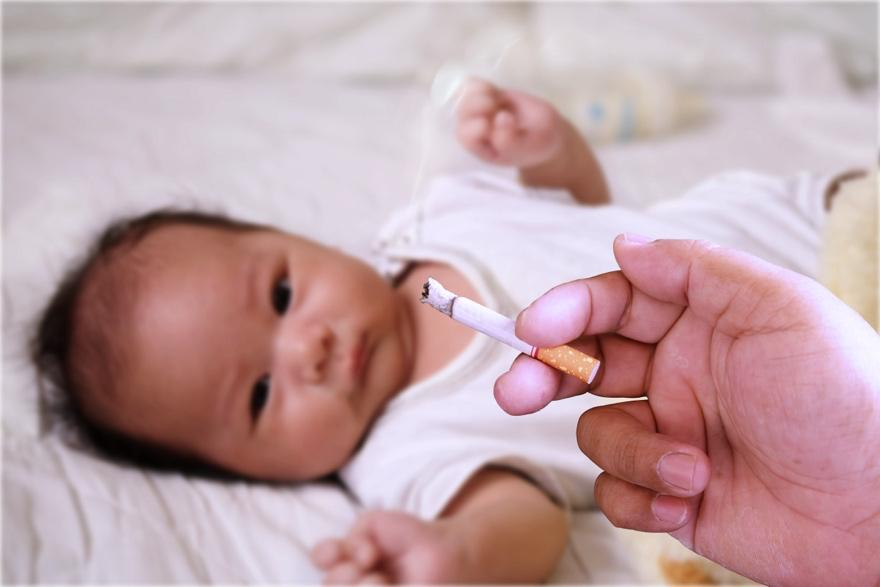
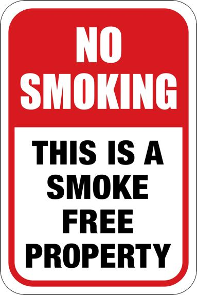

Smoke that floats in the air when someone is using a cigarette, cigar, pipe, or vape nearby is called secondhand smoke. When your baby breathes in this smoke, it can cause health problems. Secondhand smoke is even more dangerous to babies because their lungs are not as strong as those of adults.
There is no safe level of exposure to smoke for babies.

Breathing smoke from cigarettes, pipes, or cigars can harm your baby in many ways.
It can cause sudden, sharp breathing problems.
It can make asthma worse.
It can cause a cough and a cold.
It can raise the chance of ear infections.
It slows down your baby’s growth.
Over time, it can lead to heart disease, lung cancer, cataracts, and weak lungs.
It can cause sudden infant death syndrome, also known as SIDS.
It can cause learning problems and ADHD, or attention deficit hyperactivity disorder.
If someone vapes or smokes marijuana around your baby, your baby breathes in toxic chemicals like nicotine and heavy metals. E-cigarettes and marijuana have many of the same toxic and cancer-causing chemicals as tobacco smoke. They are harmful to developing lungs and brains.
Breathing in e-cigarette and marijuana smoke can:
Irritate the mouth, throat, and lungs
Make it harder for children to breathe
Raise the risk of colds, coughs, and lung infections
Raise the risk of other health problems
The full health impacts of e-cigarette and marijuana smoke are still being studied.
Even if the smoking or vaping does not happen directly around the baby, harmful chemicals can linger on skin, hair, clothing, furniture, and other surfaces. If someone who has vaped or used marijuana holds the baby, the baby absorbs these chemicals from the person’s skin and clothes, too.
Keeping your baby away from smoke keeps them safer and healthier. Here are some things you can do:
Create a smoke-free home: Make sure no one smokes inside your house or near your baby.
Ask visitors not to smoke: Tell family and friends not to smoke around your baby. Explain that you are protecting your baby’s health.
Stay outside when smoking: If you or someone else smokes, do it well away from your baby, outside, and far from windows and doors. Smoking inside in front of a window, open door, or fan will not protect your baby.
Avoid thirdhand smoke: Thirdhand smoke refers to smoke and toxic chemicals left on clothes and other surfaces in the area of a smoker. When you or someone else smokes outside and then holds the baby, smoke and toxic chemicals can be transferred to the baby. Wear clean clothes when you hold the baby.
Set rules: Make it clear that smoking is not allowed around your baby, in your home, or in the car.
Use signs: To remind visitors, put a “No Smoking” sign on your door or windows.
Take your baby outside: If someone is smoking nearby, move your baby to a place where they will not breathe the smoke in.

If you need help giving up smoking, talk to your care team. Here are some tips to help you quit:
Get help: Talk to your care team about programs and medicines to help you quit.
Make a plan: Set a date to stop smoking, and ask your family and friends for support.
Find alternatives: Use deep breathing, chew gum, or drink water when you want a cigarette.
Stay motivated: Remember that quitting is good for your baby and your health. Keep a photo of your baby close by to help keep you on track.
Call your care team if you have:
Questions about quitting smoking or how to keep smoke away from your baby
Concerns about your baby’s breathing or health
Get help right away if:
Your baby has trouble breathing or turns blue.
Your baby is very fussy or limp and cannot wake up.
Thank you for trusting us with your child’s care. We are here to support you and want you and your child to feel your best. Contact us with any questions.
IF YOU HAVE A MEDICAL EMERGENCY, CALL 911 OR GO TO THE EMERGENCY ROOM.
The information presented is intended for general information and educational purposes. It is not intended to replace the advice of your health care provider. Contact your health care provider if you believe you have a health problem.
Last updated May 2025
© 2025 Mytonomy, Inc. All rights reserved.